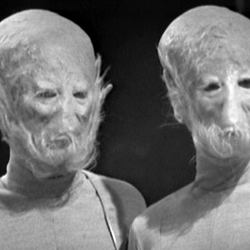

| Home | The Doctors | The Companions | The Villains |
|
|||
| cf
SensoritiesThe softly-spoken, telepathic Sensorites were encountered by the First Doctor and his companions, very early in their travels. The Sensorites had captured and brainwashed a crew of Earth scientists – driving one of their number completely mad in the process. The Doctor travelled to their homeworld, the Sense-Sphere and learned that previous Earth expeditions had tried to exploit the Sense-Sphere’s mineral reserves. An honourable race, once the Doctor has helped them root out treachery in their own people, the Sensorites agree to letting the humans go. The Tenth Doctor later remarked that Sense-Sphere is in the same system as the Ood-Sphere – the planet of the telepathic Ood. |